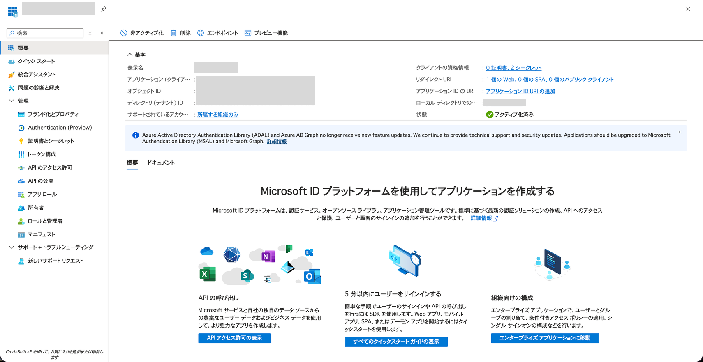
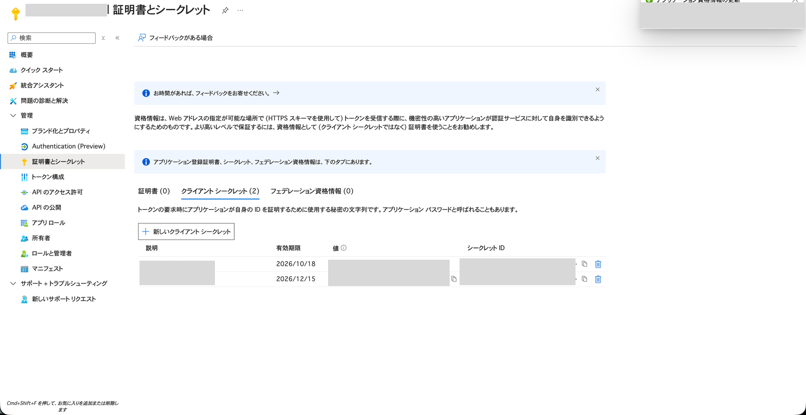
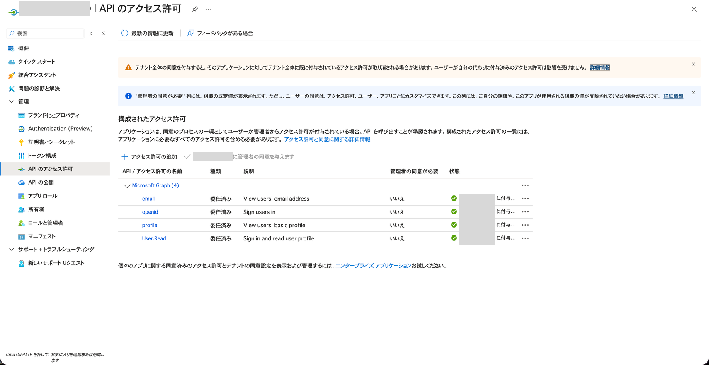
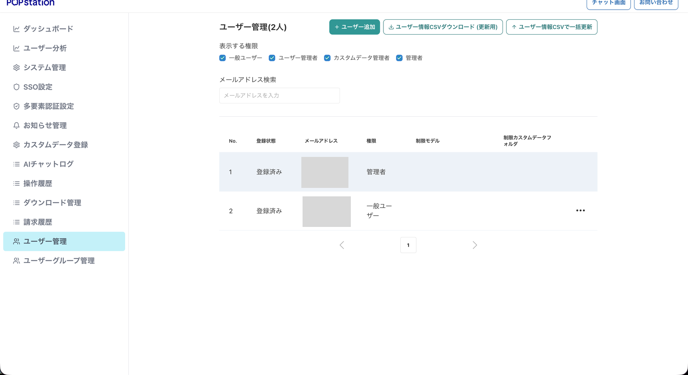

SSO設定ガイド（管理者向け）
対象: 自テナント内を管理する権限を持つ管理者（POPstation 内で「管理者」ロールを保有）
目的: Azure Entra ID にアプリ登録を作成し、POPstation の SSO 設定画面に接続情報を転記して SSO ログインを有効化する
用語: 「テナント管理者」（POPstation 運営側で全テナントを横断管理する権限）とは異なります。当ガイドの対象は 自テナント内のみを管理する顧客側の管理者 です。
目次
- 全体の流れ
- 事前準備
- Step 1: Entra ID テナントIDの確認
- Step 2: アプリ登録の作成
- Step 3: リダイレクトURIの設定
- Step 4: Client Secret の発行
- Step 5: APIアクセス許可の設定
- Step 6: Optional Claims の設定（推奨）
- Step 7: テストユーザーの準備（Entra ID 側）
- Step 8: POPstation SSO設定画面への転記・有効化
- Step 9: POPstation 側でユーザーを事前登録
- Step 10: SSOログインの動作確認
- 運用上の注意
- トラブルシューティング
全体の流れ
[Azure Entra ID] [POPstation]
① テナントID取得
② アプリ登録作成 → Client ID 取得
③ リダイレクトURI設定
④ Client Secret 発行
⑤ API権限設定+管理者同意
⑥ Optional Claims（任意）
→ ⑦ SSO設定画面に①②④の値を転記
⑧ 保存→有効化
⑨ POPstation 側でユーザーを事前登録
⑩ SSOログインURLでテスト作業時間目安: 30〜45 分。
重要: SSO は認証（本人確認）のみを Entra ID に委ねます。POPstation 側でユーザーを 事前登録していないと SSO ログイン後にアクセス拒否 となります。Entra ID にユーザーを作るだけでは POPstation を利用できません。
事前準備
1. POPstation運営事務局に SSO 機能フラグを有効化してもらう
POPstation 側で対象テナントの SSO 機能が有効化されていないと、SSO 設定画面（/manage/new/sso-settings）にアクセスできません。POPstation運営事務局に有効化を依頼してください。
2. 必要な権限
Azure Entra ID 側
本手順は Microsoft Entra ID の組み込みロール で実施できます。最小権限の原則に従い、以下のいずれかのロールを保有してください。
| 操作対象 Step | 最小権限ロール（推奨） | 代替（より広い権限） |
|---|---|---|
| Step 1: テナント ID 確認 | 一般ユーザー（既定で全ユーザー閲覧可） | — |
| Step 2: アプリ登録の作成 | アプリケーション開発者（Application Developer） | アプリケーション管理者 / クラウドアプリケーション管理者 / グローバル管理者 |
| Step 3〜4, 6: アプリ登録の構成・シークレット発行・トークン構成 | 当該アプリの 所有者（Owner）、または アプリケーション管理者 | クラウドアプリケーション管理者 / グローバル管理者 |
| Step 5.1: Microsoft Graph 委任アクセス許可の追加 | アプリの所有者、または アプリケーション管理者 | クラウドアプリケーション管理者 / グローバル管理者 |
| Step 5.2: 管理者の同意付与（テナント全体） | クラウドアプリケーション管理者（Cloud Application Administrator） | アプリケーション管理者 / 特権ロール管理者 / グローバル管理者 |
| Step 7: テストユーザー作成 | ユーザー管理者（User Administrator） | グローバル管理者 |
要点:
- 当ガイドで要求する API 権限は Microsoft Graph の 委任されたアクセス許可 のみ（
openid/profile/User.Read）。アプリケーション許可は不要なため、Step 5.2 の管理者同意付与に「クラウドアプリケーション管理者」で十分 です（グローバル管理者は不要）。- もし Step 5.1 で誤って「アプリケーションの許可」を追加した場合は、同意付与に 特権ロール管理者 または グローバル管理者 が必要になります。委任されたアクセス許可のみを追加してください。
- テナント設定の「ユーザーはアプリケーションを登録できる」が「はい」の場合、Step 2 のアプリ登録作成は一般ユーザーでも実施できます（既定値）。「いいえ」に変更されている環境では「アプリケーション開発者」以上のロールが必須です。
- 一人ですべての Step を実施する場合は、上記ロールを必要分すべて割り当てるか、より広い権限を持つ アプリケーション管理者 + ユーザー管理者 の組み合わせ（または グローバル管理者）が簡便です。
POPstation 側
- 自テナントの 管理者ロール（SSO 設定画面
/manage/new/sso-settingsへのアクセスに必要）
3. 接続先 URL（固定値）
POPstation の接続先 URL は全テナント共通の固定値です。
| 項目 | URL |
|---|---|
| POPstation サービス URL | https://popstation.ai/ |
| Auth0 ドメイン（Step 3 のリダイレクト URI で使用） | https://auth.popstation.ai/ |
Step 1: Entra ID テナントIDの確認
必要権限: 一般ユーザー（テナント ID は既定で全メンバーが閲覧可能）
- Azure Portal（https://portal.azure.com）にログイン
- 「Microsoft Entra ID」 → 「概要」
- テナントID（UUID 形式）をコピーして控える
後で POPstation 側の「Entra ID テナントID」欄に転記します。
Step 2: アプリ登録の作成
必要権限: アプリケーション開発者 以上（Application Developer / Application Administrator / Cloud Application Administrator / Global Administrator）。テナント設定「ユーザーはアプリケーションを登録できる」が「はい」の既定状態であれば一般ユーザーでも作成可能。
- 「Microsoft Entra ID」 → 「アプリの登録」 → 「+ 新規登録」
- 入力:
| 入力欄 | 値 |
|---|---|
| 名前 | POPstation SSO（任意） |
| サポートされているアカウントの種類 | この組織ディレクトリのみに含まれるアカウント |
| リダイレクト URI | 空欄（Step 3 で設定） |
- 「登録」をクリック
- 登録完了後の「概要」画面で アプリケーション (クライアント) ID をコピーして控える

後で POPstation 側の「Client ID」欄に転記します。
Step 3: リダイレクトURIの設定
必要権限: 当該アプリ登録の 所有者、または アプリケーション管理者 以上
- 作成したアプリ登録 → 「認証」 → 「+ プラットフォームを追加」 → 「Web」
- リダイレクト URI に以下の固定値を入力:
https://auth.popstation.ai/login/callback- 「構成」をクリック
チェックボックスについて
以下は チェック不要:
- 「アクセストークン (暗黙的フローに使用)」
- 「ID トークン (暗黙的およびハイブリッドフローに使用)」
Step 4: Client Secret の発行
必要権限: 当該アプリ登録の 所有者、または アプリケーション管理者 以上
- アプリ登録 → 「証明書とシークレット」 → 「クライアント シークレット」タブ → 「+ 新しいクライアント シークレット」
- 入力:
| 入力欄 | 値 |
|---|---|
| 説明 | POPstation SSO（任意） |
| 有効期限 | 社内ポリシー準拠（推奨: 12〜24 か月） |
- 「追加」をクリック
- 「値」列のシークレット値をコピーして控える

重要:
- 「値」はこの画面を離れると 二度と表示されません。必ずこのタイミングでコピーすること
- 「シークレットID」ではなく 「値」 を転記対象とする
- 有効期限到来前に更新する運用ルールを社内で確立しておくこと
Step 5: APIアクセス許可の設定
5.1 API 権限の追加
必要権限: 当該アプリ登録の 所有者、または アプリケーション管理者 以上
- アプリ登録 → 「API のアクセス許可」 → 「+ アクセス許可の追加」
- 「Microsoft Graph」 → 「委任されたアクセス許可」
- 以下を追加:
| 権限名 | 用途 |
|---|---|
openid |
OpenID Connect の基本認証 |
profile |
プロファイル情報取得 |
email |
メールアドレス取得 |
User.Read |
サインインユーザー自身の基本情報取得 |
- 「アクセス許可の追加」をクリック

5.2 管理者の同意を付与（必須）
必要権限: クラウドアプリケーション管理者（Cloud Application Administrator）以上。当ガイドで追加した委任されたアクセス許可（
openid/profile/User.Read）のみであれば、この権限で同意付与が完了します。アプリケーション許可（application permissions）を含む場合は 特権ロール管理者 または グローバル管理者 が必要になります。
- 「
<テナント名>に管理者の同意を与えます」をクリック → 「はい」
必須項目: 同意付与を怠るとログイン時に毎回同意画面が出るか、認証エラーが発生します。上記権限を持つアカウントで実施してください。
Step 6: Optional Claims の設定（推奨）
必要権限: 当該アプリ登録の 所有者、または アプリケーション管理者 以上
ID トークンに email クレームを明示的に含める設定です。実施しなくても動作する場合が多いが、メールアドレスでのユーザー識別を確実化するため推奨。
- アプリ登録 → 「トークン構成」 → 「+ オプションの要求を追加」
- トークンの種類: 「ID」
- 要求:
emailにチェック - 「追加」
- 「Microsoft Graph の
email権限をオンにする」ダイアログが出たら「はい」
ユーザーの「メール」属性が空欄だと email クレームも空になります。Entra ID 上で各ユーザーの「メール」属性に実在メールアドレスが入っていることを確認してください。
Step 7: テストユーザーの準備（Entra ID 側）
必要権限: 新規ユーザー作成は ユーザー管理者（User Administrator）以上。既存ユーザーを流用する場合は不要。
SSO 動作確認用の Entra ID ユーザーを 1〜2 名用意してください。
- 既存ユーザーを使う場合: 「メール」属性が設定されているか確認
- 新規ユーザーを作る場合: 「メール」欄に実在メールアドレスを入力
補足: ここで用意するのは 認証側（Entra ID）のユーザー です。POPstation 側のユーザー登録は別途 Step 9 で実施します。両方が揃って初めて SSO ログインが成功します。
Step 8: POPstation SSO設定画面への転記・有効化
8.1 SSO 設定画面へアクセス
POPstation に管理者アカウントでログインし、以下のメニューを開く:
管理画面 → SSO設定URL を直接開く場合:
https://POPstation.ai/manage/new/sso-settings8.2 設定値の転記
「SSO設定を開始」ボタンをクリックし、各 Step で控えた値を入力:
| POPstation の入力欄 | 入力する値（取得元 Step） |
|---|---|
| Entra ID テナントID | Step 1 で控えたテナントID |
| Client ID | Step 2 で控えたアプリケーション (クライアント) ID |
| Client Secret | Step 4 で控えたシークレットの「値」 |
| メールドメイン | SSO 対象とするメールアドレスのドメイン（例: example.co.jp） |
8.3 保存・有効化
「保存」ボタンをクリック。成功すると画面に SSO ログイン URL が表示されます:
https://popstation.ai/signin?sso=<テナントID>
この URL がユーザーへの配布対象になります。
Step 9: POPstation 側でユーザーを事前登録
必要権限: POPstation 自テナントの 管理者ロール
SSO は認証のみを Entra ID に委ねます。POPstation 側のユーザーレコードは別途必要であり、未登録ユーザーが SSO ログインしてもアクセス拒否 となります。
9.1 登録対象
SSO ログインを許可する全社員を POPstation に事前登録してください。Step 7 で用意した動作確認用のテストユーザーも忘れず登録します。
9.2 登録手順
- POPstation に管理者アカウントでログイン
- 管理画面 → ユーザー管理
- 「+ ユーザー追加」から登録

- 以下を入力:
| 項目 | 値 |
|---|---|
| メールアドレス | Entra ID 側ユーザーの「メール」属性と同一のアドレス |
| 氏名・権限・所属グループ等 | 社内運用に従って設定 |
重要: メールアドレスが Entra ID 側と POPstation 側で一致していないと SSO ログイン後にユーザーが識別できず、Access Denied になります。完全一致（大文字小文字含む）を確認してください。
9.3 一括登録
人数が多い場合は POPstation のユーザー一括取込機能（CSV インポート等）を利用してください。詳細は POPstation 管理画面のヘルプを参照。
Step 10: SSOログインの動作確認
10.1 シークレットウィンドウで SSO ログイン URL を開く
既存セッションの影響を避けるため、ブラウザのシークレットウィンドウ（プライベートブラウジング）で SSO ログイン URL を開きます。
10.2 認証フローの確認
- Microsoft のサインイン画面にリダイレクトされること
- Step 7 で用意したテストユーザー（Entra ID 側）でサインイン
- 多要素認証が設定されている場合は画面の指示に従う
- POPstation のチャット画面にリダイレクトされること
- ログイン後、Step 9 で POPstation 側に登録したユーザーとして利用できること
10.3 チェックリスト
- SSO ログイン URL → Microsoft サインイン画面の遷移
- テストユーザーでの認証成功
- POPstation へのリダイレクトとセッション確立
- POPstation 側で事前登録したユーザーとしてログインできている
- 2 回目以降のログイン正常動作
- SSO 無効化 → 通常ログインへのフォールバック動作
運用上の注意
新規社員入社時のユーザー追加
新しく SSO ログインを利用するユーザーを追加する際は、必ず以下の両方を実施 してください。
- Entra ID 側: 新規ユーザー作成 + 「メール」属性設定
- POPstation 側: Step 9 と同じ手順でユーザーを登録（Entra ID と同一メールアドレス）
どちらか一方だけでは SSO ログインは成功しません。
退職者の SSO ログイン無効化
退職者の SSO ログインを止める場合は Entra ID 側でユーザーを無効化 すれば認証段階でブロックされます。加えて、POPstation 側のユーザーレコードも無効化または削除して権限・課金を整理してください。
ユーザーへの SSO ログイン URL 配布
動作確認完了後、SSO ログイン URL を社員に配布してください。ユーザー向け手順書: SSOログイン手順
Client Secret の有効期限管理
Step 4 で発行した Client Secret には有効期限があります。期限が切れると SSO ログインができなくなるため、以下を運用ルール化してください。
- 期限の 1〜2 か月前にカレンダー通知
- 新しい Client Secret を発行 → SSO 設定画面の「Client Secret」欄を更新 → 保存
- 旧 Client Secret は期限切れまで残しておけば切替時のダウンタイムなし
SSO の一時無効化・解除
SSO 設定画面の「無効化」ボタンで一時無効化できます。
| 状態 | 挙動 |
|---|---|
| 有効 | SSO ログイン URL から Entra ID 経由でログイン可能 |
| 無効 | SSO ログイン URL にアクセスしても通常ログイン画面が表示される |
無効化中も設定値は保持されるため、「有効化」ボタンで即座に再開可能。
トラブルシューティング
「AADSTS50011: The redirect URI specified in the request does not match」
Step 3 のリダイレクト URI と Auth0 コールバック URL が不一致。Auth0 ドメインの誤字、https:// の有無を確認。
「AADSTS7000215: Invalid client secret」
Client Secret が誤りか有効期限切れ。Step 4 を再実施。シークレットの「値」を使っているか（「シークレットID」ではない）も確認。
「AADSTS65001: ユーザーまたは管理者がアプリケーションに同意していません」
Step 5.2 の管理者同意が未付与。クラウドアプリケーション管理者（以上）で「管理者の同意を与えます」を実施。
「AADSTS900144: The request body must contain the following parameter: 'scope'」
Step 5 の openid / profile / email 3 つすべての追加 + 管理者同意付与を確認。
Auth0 で「Discovery URL 到達不能」
Entra ID テナントID の入力誤り。以下 URL をブラウザで開いて JSON が返るか確認:
https://login.microsoftonline.com/<テナントID>/v2.0/.well-known/openid-configurationユーザーが SSO ログイン後に「Access Denied」になる
原因は主に 2 つです。
- POPstation 側にユーザーが未登録 — Step 9 の手順で当該ユーザーを POPstation に登録してください。Entra ID と POPstation で メールアドレスが完全一致（大文字小文字含む）していることを確認。
- Entra ID 側「メール」属性が空欄 — Azure Portal でユーザー編集 → 「メール」欄に実在メールアドレスを入力。
SSO設定画面にアクセスできない
対象テナントの SSO 機能フラグが有効化されていない可能性。社内のテナント管理者に確認を依頼してください。
その他のエラー
エラーコード（AADSTS で始まる番号）とスクリーンショットを POPstation サポート窓口へ。